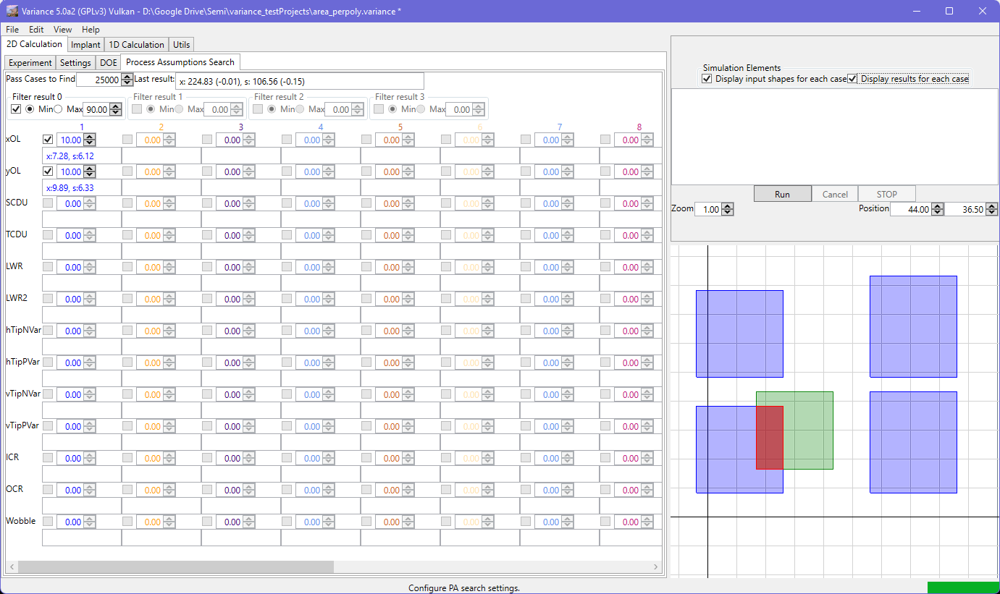

PA Search

Process Assumption (PA) Search mode allows you to reverse the direction of the calculation. You can specify one or more result conditions (for chords, for example) to set the minimum/maximum result condition you would like, and the minimum number of pass cases you would like the system to find that satisy that condition. The evaluation will stop when either the (very large) internal number of maximum cases is run, or the minimum number of pass cases has been found. Note that, in multi-threaded cases, you may get more than the minimum number of pass cases due to the parallel computation - in the single threaded mode, this will not happen.
To use the PA Search system, set up the layers and simulation parameters in the usual way. Note that some parameters in the simulation settings are not relevant to PA search mode:
- The number of cases: in PA search mode, the engine will run until the number of pass cases is found, or a very large internal limit is met.
- The CSV and SVG options: in PA search mode, CSV and SVG output is not available.
Once the base simulation has been set up (or loaded from disk), move to the PA Search tab. Here, set the minimum number of pass cases to be sought and the result criteria (additional filters will be shown for the chord case)
For each layer, flag which PAs should be sought, and the maximum variation that should be explored. Note that the runtime to find pass cases will increase with the extent of the range being sought. Note that this range will be used instead of the value assigned in the layer tab - it's not applied in addition to the layer's defined value for the PA in question.
When ready, use the familiar 'Single CPU' or 'Multi CPU' button to start the run.
During the run, the mean and standard deviation of the results that passed the result criteria is reported. At the end of the run, the mean and standard deviation of each 'sought' PA is reported. Note that the viewport update may be noticeably more intermittent in this mode, depending on the difficulty in finding matching cases. Only matching cases are displayed and used for the analysis.
Note that the output of a summary file, along with CSV and SVG files is not available in this mode. The settings here are also not stored in, or loaded from, project files.
Be aware that the search can take a very long time, or fail to complete, if you set very narrow filter criteria with very broad input ranges. This is due to the sampling of the full input space, which means the likelihood of finding a passing result within narrow filter criteria becomes small. For example, setting a 100 nm position range for an overlap area case between two 10 nm x 10 nm shapes, for a 95 nm filter in the overlap area, will cause a lengthy search - almost all values sampled in the 100 nm range will fail the criteria and represent wasted time and computation.